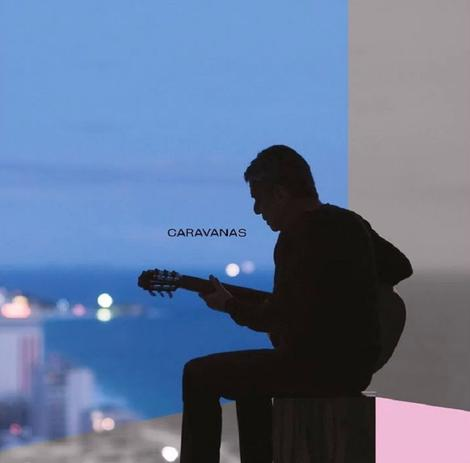

Resenha: Chico Buarque - "Caravanas" - Jornalismo (Revista 3Sinais)
Descrição do trabalho
Resenha do disco "Caravanas", de Chico Buarque, intitulada "Chico Buarque vai da burocracia à perplexidade em 'Caravanas'". Texto criado em 2017 para a Revista 3Sinais, revista eletrônica focada no cenário cultural do Rio de Janeiro e nacional. Trecho de abertura do texto:
O que fazer quando aquele que muitos consideram nosso gênio máximo lança um disco aos 73 anos? O procedimento padrão é ignorar o histórico e considerar o disco pelo que ele é – Chico Buarque não tem mais nada a provar e não vai entregar um produto menos que sofisticado. Mas e se a realidade nos agride de forma muito parecida com a realidade que cantava o nosso gênio quando foi declarado gênio? E se ele mesmo dá sinais de reação?